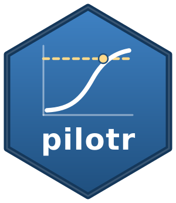

Generate a self-contained, reproducible R script from a specification
Source:R/spec_builder.R
generate_r_script.RdEmbed the specification as the JSON text that spec_json() writes, so that the returned
script reproduces the design without any external file. This turns a design built in the
no-code application into a reproducible script. The application's Verify button runs that
script in a clean R session and checks that its data are identical, bit for bit, to the data
the application's current specification produces.
Arguments
- spec
A design specification (list), as produced by
build_spec(), or the path of a specification file forload_spec()to read.
Value
A length-one character string containing a runnable R script that loads pilotr,
embeds the specification and simulates the data, with the installation line and the
suggested analysis as comments.
Details
The script ends with a commented suggestion of the analysis that fits the design. A two-group
Gaussian design with one row per subject is sent to power_design(), whose t-test takes no
other. An ordinal or beta outcome is sent to generate_design_analysis(), which writes a
Bayesian design analysis on the link scale to design_analysis.R, since power_mixed() fits
such an outcome only on the response scale. Any other design is sent to power_mixed(), and
only then does the installation line name lme4 and lmerTest, which it needs.
Since the point of the script is bit-for-bit reproduction, the embedded specification has to
preserve every coefficient exactly. The JSON text sits in a raw string that load_spec()
reads with 'jsonlite', which parses numbers with the C library's strtod(). That rounds
correctly, so each number reaches the script as the double it was on every build of R, and
the numbers stay as readable as in the specification file. Written as R literals, they would
be left to R's own parser. On a build without long-double arithmetic, such as R on Apple
silicon, that parser can read a 17-digit decimal one unit in the last place away. deparse()
is no alternative either, since it prints 15 significant digits and deparse(1/3) reads back
as a different double.
Examples
spec <- build_spec(list(name = "demo", seed = 1, design_kind = "between",
factor_name = "group", lev1 = "a", lev2 = "b", n_subject = 20,
intercept = 0, effect = 0.5, family = "gaussian", resp_name = "", sigma = 1))
cat(generate_r_script(spec))
#> # Reproducible simulation exported by pilotr.
#> # install.packages("pilotr") # from CRAN
#> library(pilotr)
#>
#> # The specification as spec_json() writes it. load_spec() reads it with jsonlite, which
#> # recovers every number exactly on every build of R.
#> spec <- load_spec(r"(
#> {
#> "spec_version": "0.3",
#> "name": "demo",
#> "seed": 1,
#> "units": {
#> "subject": {
#> "n": 20
#> }
#> },
#> "factors": [
#> {
#> "name": "group",
#> "levels": ["a", "b"],
#> "contrasts": {
#> "effect": [-0.5, 0.5]
#> },
#> "between": "subject"
#> }
#> ],
#> "fixed": {
#> "intercept": 0,
#> "coefficients": {
#> "effect": 0.5
#> }
#> },
#> "response": {
#> "family": "gaussian",
#> "name": "score",
#> "sigma": 1,
#> "round": 4
#> }
#> }
#> )")
#>
#> data <- simulate_design(spec) # analysis-ready data frame
#> # write.csv(data, "data.csv", row.names = FALSE)
#> # pow <- power_design(spec, n_sims = 1000) # power with Type S and Type M